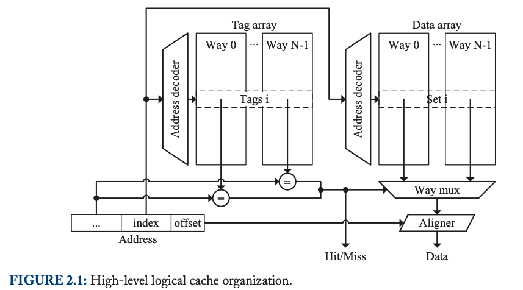
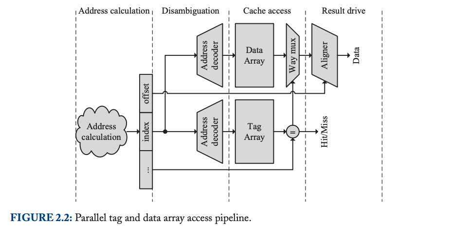
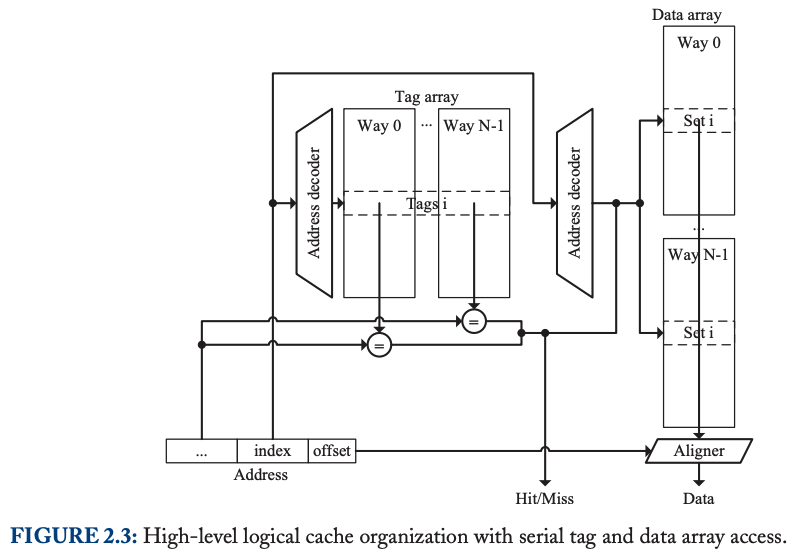

Processor Microarchitecture, An Implementation Perspective
Jan 4, 2024 · 4 min read
Classification of Microarchitectures
Pipelining increases instructionlevel parallelism (ILP), and due to its cost-effectiveness, it practically is used by all processors nowadays.
The purpose of executing instructions out of order is to increase the amount of ILP by providing more freedom to the hardware for choosing which instructions to process in each cycle. Obviously, out-of-order processors require more complex hardware than in-order ones.
A superscalar processor can execute more than 1 instruction at the same time in all pipeline stages and therefore can achieve a throughput higher than 1 instruction per cycle for some codes. Very-long-instruction-word (VLIW) processors are a particular case of superscalar processors. These processors can process multiple instructions in all pipeline stages, so they meet the definition of superscalar. What makes a superscalar processor to be VLIW are the following features: (a) it is an in-order processor, (b) the binary code indicates which instructions will be executed in parallel, and (c) many execution latencies are exposed to the programmer and become part of the instruction-set architecture, so the code has to respect some constraints regarding the distance between particular types of instructions to guarantee correct execution. These constraints have the purpose of simplifying the hardware design since they avoid the inclusion of hardware mechanisms to check for the availability of some operands at run time and to decide which instructions are issued in every cycle.
A vector processor is a processor that includes a significant number of instructions in its ISA (instruction set architecture) that are able to operate on vectors.
A multicore processor can process multiple threads simultaneously using different hardware resources for each one and includes support to allow these threads to synchronize and communicate under the control of the programmer.
A multithreaded processor is a processor that can execute simultaneously more than one thread on some of its cores.
Caches
Cache memory in processors is organized in levels. The Level 1 (L1) cache, closest to the processor, typically holds tens of kilobytes of data with low associativity and is divided into a data cache for program data and an instruction cache for program instructions. These L1 caches have small cache blocks (around 64 bytes) and are very fast, with access times between 1 to 4 cycles. Higher-level caches, like Level 2 (L2) and Level 3 (L3), are larger, often ranging from several hundred kilobytes to a few megabytes, and have higher associativity. However, they are slower, taking tens of cycles for access, and usually store both program data and instructions.
The physical address space is defined as the range of addresses that the processor can generate on its bus. The virtual address space is the range of addresses that an application program can use.
In a naive implementation, a load instruction (or instruction fetch) would have to perform several memory accesses in order to translate the linear address to a physical one (the page table is in main memory). Since this is a critical operation, all modern processors implement the translation lookaside buffer (TLB).
CACHE STRUCTURE ORGANIZATION
N-way associative cache:

Parallel/Serial Tag and Data Array Access
Parallel Tag and Data Array Access:

The cache access is typically one of the critical paths in a processor; thus, for high-frequency machines, it is pipelined. In this scenario, the address decoder simultaneously provides the index for both the data and tag arrays. The tag array then compares the tags of all ways in the corresponding set to determine which block in the data array to use. The process of fetching data and fetching tags occurs in parallel.
Serial Tag and Data Array Access:

An alternative cache design involves accessing the tag array before the data array, as illustrated in Figure 2.3. This design eliminates the need for a way multiplexor by using the tag comparison signal from the tag array as a way read/write enable signal for the data array. This signal is merged with the decoder output before accessing the array, allowing the data array ways to share the same wires to the aligner. Benefits of this approach include lower energy consumption since only the way containing the requested data is activated.
One significant advantage of this design, as compared to the one in Figure 2.1, is the relaxation of critical paths. It removes the data array to way multiplexor data path and shortens the critical path through the tag array. Consequently, this design can operate at higher frequencies but requires an additional cycle for cache access.